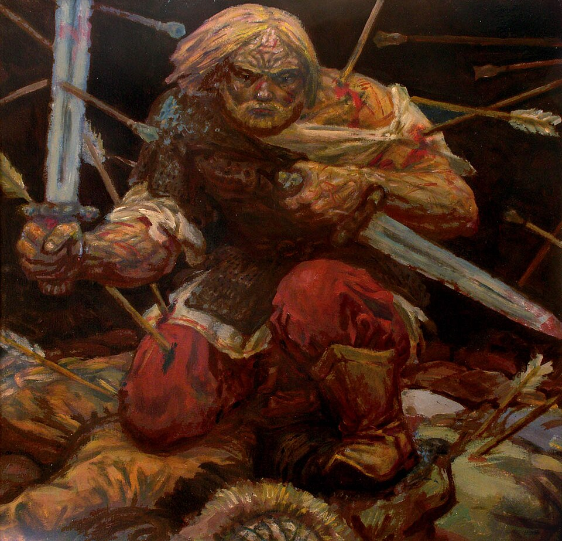
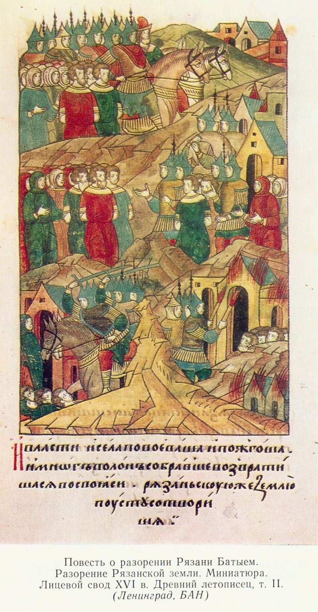
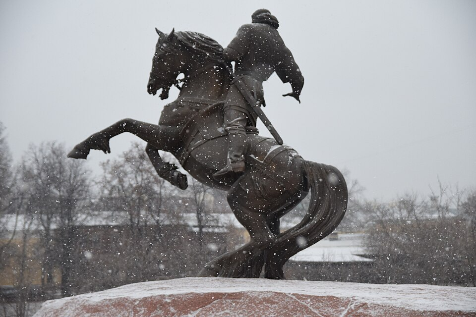

Maxim Presnyakov, “Evpaty Kolovrat”, 2009A modern artistic interpretation, not a 13th-century document. A commander on horseback, alone, against the flames: the image of a man who rode into a battle he could not win.
commander · 13th century · Ryazan
Evpaty Kolovrat · Ryazan commander
Evpaty Kolovrat
Batu burned Ryazan — but remembered the name of the man who fought on its ashes.
◆ The choice
The commander chose not to surrender: to chase down a horde a hundred times stronger than him.
◆ The battle
In single combat Kolovrat cut Khostovrul in two, down to the saddle — and the horde that had taken dozens of cities remembered this fight.
◆ The memory
His name is absent from 13th-century chronicles — but the name lived among the people, until it was cast in bronze.